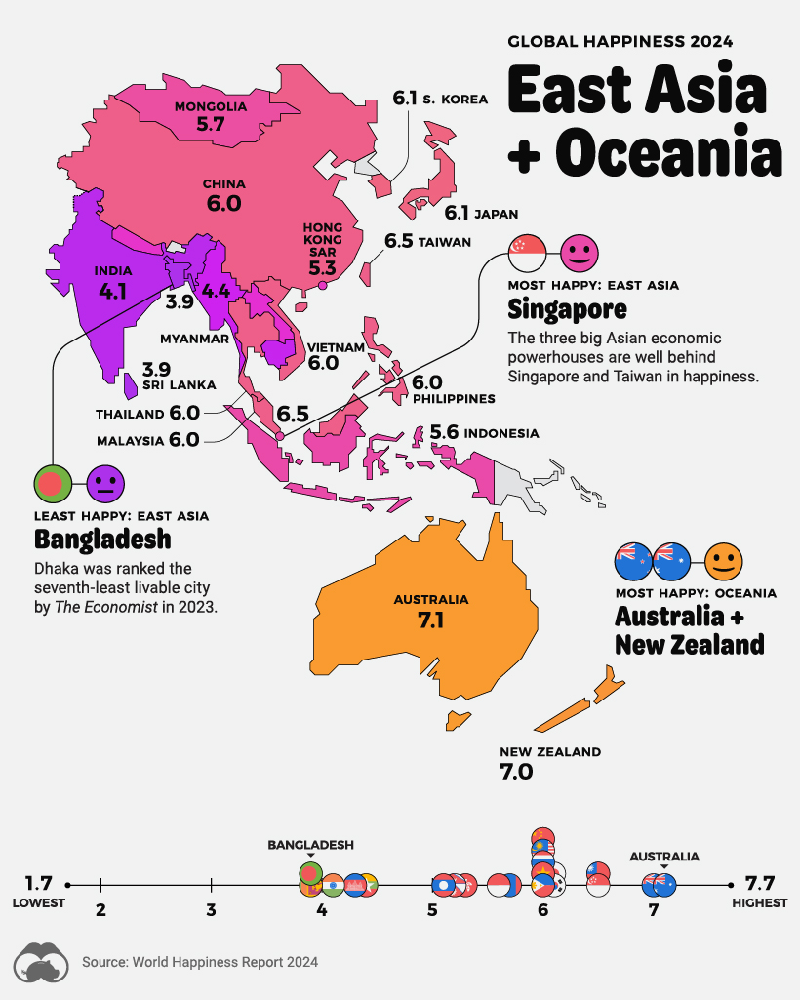
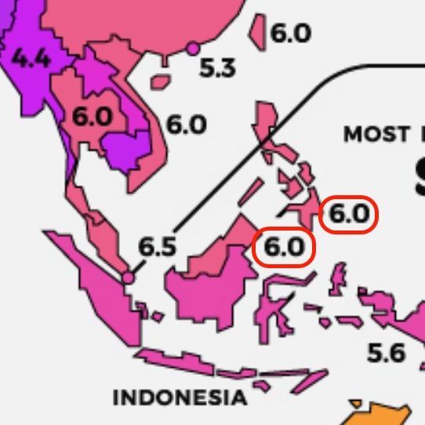

── Conflicts ────────────────────────────────────────── tidyverse_conflicts() ──
✖ dplyr::filter() masks stats::filter()
✖ dplyr::lag() masks stats::lag()
ℹ Use the conflicted package (<http://conflicted.r-lib.org/>) to force all conflicts to become errors
Original Data Visualization on the Mapping of Global Happiness Levels in a World Map in 2024 from Visualcapitalist.com
Happiness levels across the globe are a complex interplay of economic, social, psychological, and environmental factors that contribute to an individual’s sense of well-being. To quantitatively assess and compare these levels internationally, the World Happiness Report (WHR) serves as a vital tool. Initiated by the United Nations Sustainable Development Solutions Network, the WHR annually ranks countries based on the self-reported happiness of their citizens.
The report utilizes data primarily sourced from the Gallup World Poll sub dataset in the World Happiness Report, which asks respondents to evaluate their current lives on a scale from 0 to 10, known as the Cantril Ladder. This evaluation is supported by key variables that are believed to contribute to life satisfaction: GDP per capita, social support, healthy life expectancy, personal freedom, generosity, and perceptions of corruption.
The following visualization from Visualcapitalist.com presents the global happiness levels in 2024, as reported in the World Happiness Report. The static world map provides a visual representation of the happiness scores across different countries, with the color gradient indicating the relative happiness levels. The visualization aims to highlight the disparities in happiness levels worldwide and the factors that contribute to these variations. However, through our critical analysis, we identified several strengths and weaknesses in the original visualization that we aim to improve as detailed below.
Figure 1: Global Overview World map of Happiness Levels in 2024

Figure 2: Map of Happiness Levels of East Asia + Oceania in 2024
Critical Assessment and Strength & Weaknesses of the Original Visualization
The Global World Map in Figure 1 and the region map Figure 2 visualizes three variables: country, happiness score, and geographical location. The visualization indicates at the top, the color gradient legend indicating that the countries are color-coded based on their happiness scores, with a spectrum ranging from blue (least happy, score of 1) through pink (average happiness, score of 4) to yellow (happiest, score of 8).
Further more the countries are also labeled with their respective happiness scores in a bolded text, such as the label “6.5” on Finland, indicating the happiness score of Finland.
In addition to this they also provide pointers to the countries with the highest and lowest happiness scores in their respective region, such as the pointer on Finland indicating “MOST HAPPY: EUROPE” on the contrary would be pointer to Ukraine with the label “LEAST HAPPY: EUROPE”. This provides a quick overview of the happiness levels in different regions of the world.
The news media also provides a zoomed in version of the world map Figure 2 for a more detailed view of the happiness scores per region, with the countries incosistently labeled with their respective happiness scores and country name. This allows readers to focus on a specific region and compare the happiness scores of different countries within that region. In addition to this they also provide a linear scale of the happiness scores of each country in the respective region at the bottom of the map in Figure 2.
Overall, the original visual is effective in communicating to the readers of the Happiness Levels across the countries. However, there are some shortcomings the team has identified:
Weaknesses
The original visualization has several weaknesses that limit its effectiveness in conveying the information to the audience. These weaknesses include:
Lack of Interactivity: The static nature of the world map limits the audience’s ability to interact with the data and explore specific countries or regions in more detail. An interactive visualization would allow users to hover over countries to see detailed information and compare happiness scores across different years.
Limited Context: While the color gradient provides a general overview of happiness levels, the visualization lacks additional context or explanations of the factors contributing to these scores. Including annotations or tooltips that explain the key variables influencing happiness levels would enhance the audience’s understanding of the data.

Inconsistent Labeling example
Inconsistent Labeling:
The labeling of happiness scores and name of countries are inconsistent in placement or are not displayed, making it challenging for the audience to quickly identify and compare scores across countries.
A standardized labeling format would improve the readability and clarity of the visualization. In addition to this, there are countries’ happiness scores that are not labeled due to the lack of space for example Cambodia and Laos, which may lead to confusion for the audience.
Furthermore, the lack of pointers and inconsistent formatting severely affect readability for countries such Philippines and Indonesia have confusing unclear placements as to which country the label belongs to.
Limited Historical Comparison: The visualization only presents the happiness scores for the year 2024, without providing any historical comparison or trend analysis. Including data from previous years or a time slider feature would allow users to track changes in happiness levels over time and identify emerging patterns or trends.
Limited Data Insights: The visualization focuses solely on the happiness scores of countries without providing additional insights or analysis of the data. Including annotations, data summaries, or comparisons with other relevant metrics would enrich the audience’s understanding of the factors influencing happiness levels.
Color Blindness: The color gradient used in the visualization may not be accessible to color-blind users, as certain color combinations may be difficult to distinguish. Using color schemes that are accessible to users with color vision deficiencies would improve the inclusivity of the visualization.
7. Linear Scale: The linear scale at the bottom of the region map is poorly visualised and does not provide a distinct separation and vivid depiction between the countries. This further worsened by the clustering and overlapping of icons, makes it difficult for the audience to interpret and compare the happiness scores of each country within the region.
Proposed Improvements
To address the weaknesses of the original data visualisation, we propose the following improvements:
Interactive Data Visualization: Develop an interactive data visualization that allows users to explore the data in more detail. Users should be able to hover over countries to see detailed information, compare happiness scores across different years, and filter the data based on specific criteria such as region or happiness score range.
Consistent Labeling and Annotations: Standardize the labeling format for countries to ensure consistency and readability. Include annotations or tooltips that provide additional context on the factors influencing happiness scores, helping users understand the data better.
Historical Comparison and Trend Analysis: Incorporate data from previous years and implement a time slider feature that enables users to track changes in happiness levels over time. This feature will allow users to identify trends, patterns, and outliers in the data and gain insights into the factors driving these changes.
Data Insights and Analysis: Provide data summaries, comparisons with other relevant metrics, and visualizations that offer insights into the factors influencing happiness levels. Including additional context and analysis will enhance the audience’s understanding of the data and encourage further exploration.
User-Friendly Design: Design the data visualization with a user-friendly interface that is intuitive and easy to navigate. Consider the audience’s needs and preferences when developing the visualization to ensure an engaging and informative user experience.
Accessible Color Schemes: Use color schemes that are accessible to users with color vision deficiencies, such as color-blindness. Ensure that the visualization is inclusive and can be easily interpreted by all users, regardless of their color vision abilities.
Improved Linear Scale Visualization: Enhance the linear scale visualization to provide a clear and distinct separation between countries. Avoid clustering and overlapping of icons to improve readability and enable users to interpret and compare the happiness scores of each country within the region effectively.
Data sources
For our project, we will be using the World Happiness Report (WHR) dataset, which is available on the World Happiness Report website. We will be doing the latest 3 years from 2021 - 2023. The dataset contains information on the happiness scores of countries worldwide, along with key variables such as GDP per capita, social support, healthy life expectancy, personal freedom, generosity, and perceptions of corruption. The data will be used to create visualizations that highlight the happiness levels across different countries and regions, as well as the factors influencing these levels.
Importing dataset
We will be importing the dataset using the readxl package. The dataset will be stored in a data frame for further analysis and visualization.
data<-read_excel("DataForTable2.1.xls")
Data cleaning and transformation
As we will be only using data from 2021 - 2023, we will filter out the data from other years. We will also check for missing data and fill in the missing values with the mean of the available data from each country.Some additional steps such as changing delimiters from ” ” to “_” will be done for future convience sake.
Delimiter change
data <- data %>%rename_with(~str_replace_all(., " ", "_"))head(data)

 7. Linear Scale: The linear scale at the bottom of the region map is poorly visualised and does not provide a distinct separation and vivid depiction between the countries. This further worsened by the clustering and overlapping of icons, makes it difficult for the audience to interpret and compare the happiness scores of each country within the region.
7. Linear Scale: The linear scale at the bottom of the region map is poorly visualised and does not provide a distinct separation and vivid depiction between the countries. This further worsened by the clustering and overlapping of icons, makes it difficult for the audience to interpret and compare the happiness scores of each country within the region.